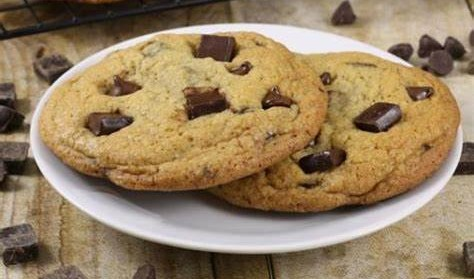
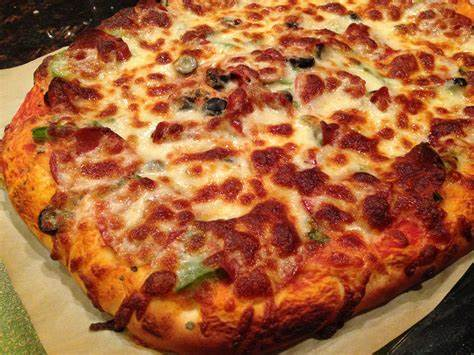

Classic Chocolate Chip Cookies

Enjoy the classic taste of homemade cookies!
Ingredients:
- 1 cup (2 sticks) softened butter
- 3/4 cup granulated sugar
- 3/4 cup packed brown sugar
- 1 tsp vanilla extract
- 2 large eggs
- 2 1/4 cups all-purpose flour
- 1 tsp baking soda
- 1/2 tsp salt
- 2 cups chocolate chips
Instructions:
- Preheat oven to 375°F (190°C)
- Cream butter, sugars, and vanilla until fluffy
- Beat in eggs
- Mix flour, baking soda, salt in another bowl
- Combine dry mix with wet mix
- Stir in chocolate chips
- Drop tablespoons of dough onto baking sheets
- Bake 9-11 mins until edges are golden
- Cool briefly on sheets, then racks
- Enjoy the classic taste of homemade cookies!
Homemade Pizza

Slice the pizza and enjoy your delicious homemade creation!
Ingredients:
For the Dough:
- 2 1/4 cups all-purpose flour
- 1 packet (2 1/4 tsp) active dry yeast
- 1 cup warm water
- 1 tsp sugar
- 1 tsp salt
- 2 tbsp olive oil
For the Toppings:
- 1 cup pizza sauce
- 2 cups shredded mozzarella cheese
- Your choice of toppings (pepperoni, mushrooms, bell peppers, onions, etc.)
- Dried oregano and red pepper flakes (optional)
Instructions:
- In a bowl, mix warm water and sugar until sugar dissolves.
- Sprinkle yeast over the mixture, let it sit for 5-10 minutes until it's foamy.
- Stir in salt and olive oil.
- Gradually add flour, kneading until you have a smooth dough.
- Cover the dough and let it rise for about 1 hour or until it doubles in size.